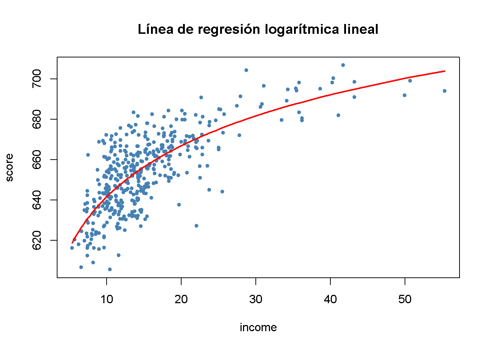
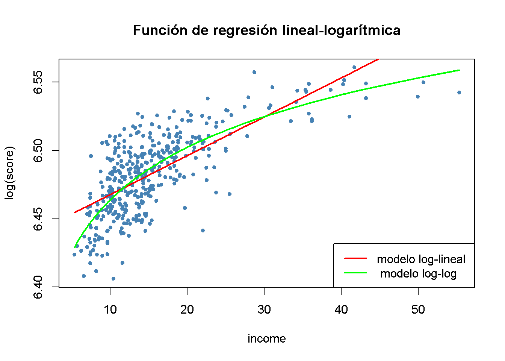
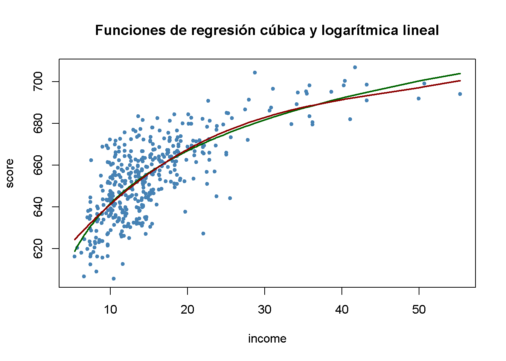

9.2 Funciones no lineales de una única variable independiente
Polinomios
El enfoque utilizado para obtener un modelo cuadrático se puede generalizar a modelos polinomiales de grado arbitrario \(r\),
\[Y_i = \beta_0 + \beta_1 X_i + \beta_2 X_i^2 + \cdots + \beta_r X_i^r + u_i.\]
Un modelo cúbico, por ejemplo, se puede estimar de la misma forma que el modelo cuadrático; solo se tiene que usar un polinomio de grado \(r = 3\) en income. Esto se hace convenientemente usando la función poly().
# estimar un modelo cúbico
cubic_model <- lm(score ~ poly(income, degree = 3, raw = TRUE), data = CASchools)poly() genera polinomios ortogonales que son ortogonales a la constante por defecto. Aquí, se establece raw = TRUE de modo que los polinomios sin procesar se evalúen, consultar ?Poly.
En la práctica, surgirá la cuestión de qué orden polinómico debería elegirse. Primero, de manera similar a \(r = 2\), se puede probar la hipótesis nula de que la relación verdadera es lineal contra la hipótesis alternativa de que la relación es un polinomio de grado \(r\):
\[ H_0: \beta_2=0, \ \beta_3=0,\dots,\beta_r=0 \ \ \ \text{vs.} \ \ \ H_1: \text{at least one} \ \beta_j\neq0, \ j=2,\dots,r \]
Esta es una hipótesis nula conjunta con restricciones de \(r-1\), por lo que puede probarse utilizando la prueba \(F\) presentada en el Capítulo 8. linearHypothesis() se puede utilizar para realizar tales pruebas. Por ejemplo, se puede probar la hipótesis nula de un modelo lineal contra la alternativa de un polinomio de grado máximo \(r = 3\) como sigue.
# probar la hipótesis de un modelo lineal contra alternativas cuadráticas o polinominales
# configurar la matriz de hipótesis
R <- rbind(c(0, 0, 1, 0),
c(0, 0, 0, 1))
# hacer la prueba
linearHypothesis(cubic_model,
hypothesis.matrix = R,
white.adj = "hc1")
#> Linear hypothesis test
#>
#> Hypothesis:
#> poly(income, degree = 3, raw = TRUE)2 = 0
#> poly(income, degree = 3, raw = TRUE)3 = 0
#>
#> Model 1: restricted model
#> Model 2: score ~ poly(income, degree = 3, raw = TRUE)
#>
#> Note: Coefficient covariance matrix supplied.
#>
#> Res.Df Df F Pr(>F)
#> 1 418
#> 2 416 2 37.691 9.043e-16 ***
#> ---
#> Signif. codes: 0 '***' 0.001 '**' 0.01 '*' 0.05 '.' 0.1 ' ' 1Se proporciona una matriz de hipótesis como argumento hypothesis.matrix. Esto es útil cuando los coeficientes tienen nombres largos, como es el presente caso debido al uso de poly(), o cuando las restricciones incluyen múltiples coeficientes. La forma en que linearHypothesis() interpreta la matriz de hipótesis \(\mathbf{R}\) se ve mejor usando álgebra matricial:
Para las dos restricciones lineales anteriores, se tiene: \[\begin{align*} \mathbf{R}\boldsymbol{\beta} =& \mathbf{s} \\ \begin{pmatrix} 0 & 0 & 1 & 0 \\ 0 & 0 & 0 & 1 \end{pmatrix} \begin{pmatrix} \beta_0 \\ \beta_1 \\ \beta_2 \\ \beta_3 \\ \end{pmatrix} =& \begin{pmatrix} 0 \\ 0 \end{pmatrix} \\ \begin{pmatrix} \beta_2 \\ \beta_3 \end{pmatrix}= & \begin{pmatrix} 0 \\ 0 \end{pmatrix}. \end{align*}\]
linearHypothesis() usa el vector cero para \(\mathbf{s}\) por defecto, ver ?linearHypothesis.
El valor de \(p\) para es muy pequeño, por lo que se rechaza la hipótesis nula. Sin embargo, esto no indica qué \(r\) elegir. En la práctica, un enfoque para determinar el grado del polinomio es utilizar pruebas secuenciales:
- Estimar un modelo polinomial para un valor máximo \(r\).
- Utilizar una prueba \(t\) para probar \(\beta_r = 0\). El rechazo de la hipótesis nula significa que \(X^r\) pertenece a la ecuación de regresión.
- La aceptación de la hipótesis nula en el paso 2 implica que \(X^r\) se puede eliminar del modelo. Continuar repitiendo el paso 1 con el orden \(r-1\) y probar si \(\beta_{r-1}=0\). Si la prueba es rechazada, usar un modelo polinomial de orden \(r-1\).
- Si las pruebas del paso 3 son rechazadas, continuar con el procedimiento hasta que el coeficiente de la potencia más alta sea estadísticamente significativo.
No existe una pauta inequívoca sobre cómo elegir \(r\) en el paso uno. Sin embargo, como se señala en Stock and Watson (2015), los datos económicos a menudo son fluidos, por lo que es apropiado elegir órdenes pequeños como \(2\), \(3\) o \(4\).
Se demostrará cómo aplicar pruebas secuenciales con el ejemplo del modelo cúbico.
summary(cubic_model)
#>
#> Call:
#> lm(formula = score ~ poly(income, degree = 3, raw = TRUE), data = CASchools)
#>
#> Residuals:
#> Min 1Q Median 3Q Max
#> -44.28 -9.21 0.20 8.32 31.16
#>
#> Coefficients:
#> Estimate Std. Error t value Pr(>|t|)
#> (Intercept) 6.001e+02 5.830e+00 102.937 < 2e-16
#> poly(income, degree = 3, raw = TRUE)1 5.019e+00 8.595e-01 5.839 1.06e-08
#> poly(income, degree = 3, raw = TRUE)2 -9.581e-02 3.736e-02 -2.564 0.0107
#> poly(income, degree = 3, raw = TRUE)3 6.855e-04 4.720e-04 1.452 0.1471
#>
#> (Intercept) ***
#> poly(income, degree = 3, raw = TRUE)1 ***
#> poly(income, degree = 3, raw = TRUE)2 *
#> poly(income, degree = 3, raw = TRUE)3
#> ---
#> Signif. codes: 0 '***' 0.001 '**' 0.01 '*' 0.05 '.' 0.1 ' ' 1
#>
#> Residual standard error: 12.71 on 416 degrees of freedom
#> Multiple R-squared: 0.5584, Adjusted R-squared: 0.5552
#> F-statistic: 175.4 on 3 and 416 DF, p-value: < 2.2e-16El modelo cúbico estimado almacenado en cubic_model es
\[ \widehat{TestScore}_i = \underset{(5.83)}{600.1} + \underset{(0.86)}{5.02} \times income -\underset{(0.03)}{0.96} \times income^2 - \underset{(0.00047)}{0.00069} \times income^3. \]
La estadística \(t\) sobre \(income^3\) es \(1.42\), por lo que el valor nulo de que la relación es cuadrática no puede rechazarse, incluso en el nivel de $10% $. Esto es contrario a la estrategia de usar errores estándar robustos en todo momento, por lo que también se usará una estimación robusta de varianza-covarianza para reproducir estos resultados.
# probar la hipótesis utilizando errores estándar robustos
coeftest(cubic_model, vcov. = vcovHC, type = "HC1")
#>
#> t test of coefficients:
#>
#> Estimate Std. Error t value
#> (Intercept) 6.0008e+02 5.1021e+00 117.6150
#> poly(income, degree = 3, raw = TRUE)1 5.0187e+00 7.0735e-01 7.0950
#> poly(income, degree = 3, raw = TRUE)2 -9.5805e-02 2.8954e-02 -3.3089
#> poly(income, degree = 3, raw = TRUE)3 6.8549e-04 3.4706e-04 1.9751
#> Pr(>|t|)
#> (Intercept) < 2.2e-16 ***
#> poly(income, degree = 3, raw = TRUE)1 5.606e-12 ***
#> poly(income, degree = 3, raw = TRUE)2 0.001018 **
#> poly(income, degree = 3, raw = TRUE)3 0.048918 *
#> ---
#> Signif. codes: 0 '***' 0.001 '**' 0.01 '*' 0.05 '.' 0.1 ' ' 1Los errores estándar informados han cambiado. Además, el coeficiente de income^3 ahora es significativo en el nivel de \(5\%\). Esto significa que se rechaza la hipótesis de que la función de regresión es cuadrática frente a la alternativa de que es cúbica. Además, también se puede probar si los coeficientes de income^2 e income^3 son conjuntamente significativos utilizando una versión robusta de la prueba \(F\).
# realizar una prueba F robusta
linearHypothesis(cubic_model,
hypothesis.matrix = R,
vcov. = vcovHC, type = "HC1")
#> Linear hypothesis test
#>
#> Hypothesis:
#> poly(income, degree = 3, raw = TRUE)2 = 0
#> poly(income, degree = 3, raw = TRUE)3 = 0
#>
#> Model 1: restricted model
#> Model 2: score ~ poly(income, degree = 3, raw = TRUE)
#>
#> Note: Coefficient covariance matrix supplied.
#>
#> Res.Df Df F Pr(>F)
#> 1 418
#> 2 416 2 29.678 8.945e-13 ***
#> ---
#> Signif. codes: 0 '***' 0.001 '**' 0.01 '*' 0.05 '.' 0.1 ' ' 1Con un valor de \(p\) de \(9.043e^{-16}\), es decir, mucho menos de \(0.05\), la hipótesis nula de linealidad se rechaza a favor de la alternativa de que la relación es cuadrática o cúbica.
Interpretación de coeficientes en modelos de regresión no lineal
Los coeficientes de la regresión polinomial no tienen una interpretación simple. ¿Por qué? Piense en un modelo cuadrático: No es útil pensar en el coeficiente de \(X\) como el cambio esperado en \(Y\) asociado con un cambio en \(X\) manteniendo constantes los otros regresores porque \(X^2\) cambia conforme \(X\) varía. Este es también el caso de otras desviaciones de la linealidad, por ejemplo, en modelos en los que los regresores y/o la variable dependiente se transforman logarítmicamente. Una forma de abordar esto es calcular el efecto estimado en \(Y\) asociado con un cambio en \(X\) para uno o más valores de \(X\). Esta idea se resume en el Concepto clave 8.1.
Concepto clave 8.1
El efecto esperado en \(Y\) de un cambio en \(X_1\) en un modelo de regresión no lineal
Considere el modelo de regresión poblacional no lineal
\[ Y_i = f(X_{1i}, X_{2i}, \dots, X_{ki}) + u_i \ , \ i=1,\dots,n,\]
donde \(f(X_{1i}, X_{2i}, \dots, X_{ki})\) es la función de regresión poblacional y \(u_i\) es el término de error.
Denote por \(\Delta Y\) el cambio esperado en \(Y\) asociado con \(\Delta X_1\), el cambio en \(X_1\) mientras se mantiene constante \(X_2, \cdots , X_k\). En otras palabras, el cambio esperado en \(Y\) es la diferencia
\[\Delta Y = f(X_1 + \Delta X_1, X_2, \cdots, X_k) - f(X_1, X_2, \cdots, X_k).\]
El estimador de esta diferencia poblacional desconocida es la diferencia entre los valores predichos para estos dos casos. Sea \(\hat{f}(X_1, X_2, \cdots, X_k)\) el valor predicho de \(Y\) basado en el estimador \(\hat{f}\) de la función de regresión poblacional. Entonces el cambio predicho en \(Y\) es
\[\Delta \widehat{Y} = \hat{f}(X_1 + \Delta X_1, X_2, \cdots, X_k) - \hat{f}(X_1, X_2, \cdots, X_k).\]Por ejemplo, se puede preguntar lo siguiente: ¿Cuál es el cambio predicho en los puntajes de las pruebas asociado con un cambio de una unidad (es decir, \(\$1000\)) en los ingresos, según la función de regresión cuadrática estimada?
\[\widehat{TestScore} = 607.3 + 3.85 \times income - 0.0423 \times income^2\ ?\]
Dado que la función de regresión es cuadrática, este efecto depende del ingreso inicial del distrito. Por tanto, se consideran dos casos:
Un aumento en los ingresos del distrito de \(10\) a \(11\) (es decir, de \(\$10000\) per cápita a \(\$11000\)).
Un aumento en los ingresos del distrito de \(40\) a \(41\) (es decir, de \(\$40000\) per cápita a \(\$41000\)).
Para obtener el \(\Delta \widehat{Y}\) asociado con un cambio en el ingreso de \(10\) a \(11\), se usa la siguiente fórmula:
\[\Delta \widehat{Y} = \left(\hat{\beta}_0 + \hat{\beta}_1 \times 11 + \hat{\beta}_2 \times 11^2\right) - \left(\hat{\beta}_0 + \hat{\beta}_1 \times 10 + \hat{\beta}_2 \times 10^2\right) \]
Para calcular \(\widehat{Y}\) usando R, se puede usar predict().
# calcular y asignar el modelo cuadrático
quadriatic_model <- lm(score ~ income + I(income^2), data = CASchools)
# configurar datos para la predicción
new_data <- data.frame(income = c(10, 11))
# hacer la predicción
Y_hat <- predict(quadriatic_model, newdata = new_data)
# calcular la diferencia
diff(Y_hat)
#> 2
#> 2.962517De manera análoga, se puede calcular el efecto de un cambio en los ingresos del distrito de \(40\) a \(41\):
# configurar datos para la predicción
new_data <- data.frame(income = c(40, 41))
# hacer la predicción
Y_hat <- predict(quadriatic_model, newdata = new_data)
# calcula la diferencia
diff(Y_hat)
#> 2
#> 0.4240097Entonces, para el modelo cuadrático, el cambio esperado en \(TestScore\) inducido por un aumento en \(income\) de \(10\) a \(11\) es aproximadamente \(2.96\) puntos, pero un aumento en \(income\) de \(40\) a \(41\) aumenta la puntuación prevista en solo \(0.42\). Por lo tanto, la pendiente de la función de regresión cuadrática estimada es más pronunciada en los niveles de ingresos bajos que en los niveles más altos.
Logaritmos
Otra forma de especificar una función de regresión no lineal es usar el logaritmo natural de \(Y\) y/o \(X\).
Los logaritmos convierten los cambios en las variables en cambios porcentuales. Esto es conveniente, ya que muchas relaciones se expresan naturalmente en términos de porcentajes.
Existen tres casos diferentes en los que se pueden utilizar logaritmos.
Transformar \(X\) con su logaritmo, pero no \(Y\).
De manera análoga, se podría transformar \(Y\) a su logaritmo, pero dejar \(X\) en su nivel original.
Tanto \(Y\) como \(X\) se transforman a sus logaritmos.
La interpretación de los coeficientes de regresión es diferente en cada caso.
Caso I: \(X\) está en logaritmo, \(Y\) no.
El modelo de regresión entonces es \[Y_i = \beta_0 + \beta_1 \times \ln(X_i) + u_i \text{, } i=1,...,n. \], similar a la regresión polinomial, no se tiene que crear una nueva variable antes de usar lm(). Simplemente se puede ajusta el argumento lm() de la función formula para decirle a R que se debe usar la transformación logarítmica de una variable.
# estimar un modelo lineal-log (logarítmico de nivel)
LinearLog_model <- lm(score ~ log(income), data = CASchools)
# calcular resumen robusto
coeftest(LinearLog_model,
vcov = vcovHC, type = "HC1")
#>
#> t test of coefficients:
#>
#> Estimate Std. Error t value Pr(>|t|)
#> (Intercept) 557.8323 3.8399 145.271 < 2.2e-16 ***
#> log(income) 36.4197 1.3969 26.071 < 2.2e-16 ***
#> ---
#> Signif. codes: 0 '***' 0.001 '**' 0.01 '*' 0.05 '.' 0.1 ' ' 1Por tanto, la función de regresión estimada es
\[\widehat{TestScore} = 557.8 + 36.42 \times \ln(income).\]
Resulta importante dibujar una gráfica de esta función.
# dibujar un diagrama de dispersión
plot(score ~ income,
col = "steelblue",
pch = 20,
data = CASchools,
main = "Línea de regresión logarítmica lineal")
# agregar la línea de regresión logarítmica lineal
order_id <- order(CASchools$income)
lines(CASchools$income[order_id],
fitted(LinearLog_model)[order_id],
col = "red",
lwd = 2)
Se puede interpretar \(\hat{\beta}_1\) de la siguiente manera: Un aumento de \(1\%\) en los ingresos está asociado con un aumento en los puntajes de las pruebas de \(0.01 \times 36.42 = 0.36\) puntos. Para obtener el efecto estimado de un cambio de una unidad en el ingreso (es decir, un cambio en las unidades originales, miles de dólares) en los puntajes de las pruebas, se puede utilizar el método presentado en el Concepto clave 8.1.
# configurar nuevos datos
new_data <- data.frame(income = c(10, 11, 40, 41))
# predecir los resultados
Y_hat <- predict(LinearLog_model, newdata = new_data)
# calcula la diferencia esperada
Y_hat_matrix <- matrix(Y_hat, nrow = 2, byrow = TRUE)
Y_hat_matrix[, 2] - Y_hat_matrix[, 1]
#> [1] 3.471166 0.899297Al establecer nrow = 2 y byrow = TRUE en matrix() se asegura que Y_hat_matrix es una matriz de \(2\times2\) rellenada por filas con las entradas de Y_hat.
El modelo estimado establece que para un aumento de ingresos de \(\$10000\) a \(\$11000\), los puntajes de las pruebas aumentan en una cantidad esperada de \(3.47\) puntos. Cuando los ingresos aumentan de \(\$40000\) a \(\$41000\), el aumento esperado en los puntajes de las pruebas es de solo \(0.90\) puntos.
Caso II: \(Y\) está en logaritmo, \(X\) no
Existen casos en los que es útil hacer una regresión \(\ln(Y)\).
El modelo de regresión correspondiente entonces es
\[ \ln(Y_i) = \beta_0 + \beta_1 \times X_i + u_i , \ \ i=1,...,n. \]
# estimar un modelo log-lineal
LogLinear_model <- lm(log(score) ~ income, data = CASchools)
# obtener un resumen robusto de coeficientes
coeftest(LogLinear_model,
vcov = vcovHC, type = "HC1")
#>
#> t test of coefficients:
#>
#> Estimate Std. Error t value Pr(>|t|)
#> (Intercept) 6.43936234 0.00289382 2225.210 < 2.2e-16 ***
#> income 0.00284407 0.00017509 16.244 < 2.2e-16 ***
#> ---
#> Signif. codes: 0 '***' 0.001 '**' 0.01 '*' 0.05 '.' 0.1 ' ' 1La función de regresión estimada es \[\widehat{\ln(TestScore)} = 6.439 + 0.00284 \times income.\] Se espera que un aumento en los ingresos del distrito en \(\$1000\) aumente los puntajes de las pruebas en \(100\times 0.00284 \% = 0.284\%\).
Cuando la variable dependiente está en logaritmo, uno no puede simplemente usar \(e^{\log(\cdot)}\) para transformar las predicciones de nuevo a la escala original.
Caso III: \(Y\) y \(X\) están en logaritmos
El modelo de regresión log-log es
\[\ln(Y_i) = \beta_0 + \beta_1 \times \ln(X_i) + u_i, \ \ i=1,...,n.\]
# estimate the log-log model
LogLog_model <- lm(log(score) ~ log(income), data = CASchools)
# imprimir un resumen robusto de coeficientes en la consola
coeftest(LogLog_model,
vcov = vcovHC, type = "HC1")
#>
#> t test of coefficients:
#>
#> Estimate Std. Error t value Pr(>|t|)
#> (Intercept) 6.3363494 0.0059246 1069.501 < 2.2e-16 ***
#> log(income) 0.0554190 0.0021446 25.841 < 2.2e-16 ***
#> ---
#> Signif. codes: 0 '***' 0.001 '**' 0.01 '*' 0.05 '.' 0.1 ' ' 1Por tanto, la función de regresión estimada es \[\widehat{\ln(TestScore)} = 6.336 + 0.0554 \times \ln(income).\] En un modelo log-log, se asocia un cambio de \(1\%\) en \(X\) con un cambio estimado de \(\hat\beta_1 \%\) en \(Y\).
# generar un diagrama de dispersión
plot(log(score) ~ income,
col = "steelblue",
pch = 20,
data = CASchools,
main = "Función de regresión lineal-logarítmica")
# agregar la línea de regresión log-lineal
order_id <- order(CASchools$income)
lines(CASchools$income[order_id],
fitted(LogLinear_model)[order_id],
col = "red",
lwd = 2)
# agregar la línea de regresión log-log
lines(sort(CASchools$income),
fitted(LogLog_model)[order(CASchools$income)],
col = "green",
lwd = 2)
# agregar una leyenda
legend("bottomright",
legend = c("modelo log-lineal "," modelo log-log"),
lwd = 2,
col = c("red", "green"))
El Concepto clave 8.2 resume los tres modelos de regresión logarítmica.
Concepto clave 8.2
Logaritmos en regresión: Tres casos
Los logaritmos se pueden usar para transformar la variable dependiente \(Y\) o la variable independiente \(X\), o ambas (la variable que se transforma debe ser positiva).
La siguiente tabla resume estos tres casos y la interpretación del coeficiente de regresión \(\beta_1\). En cada caso, \(\beta_1\), se puede estimar aplicando MCO después de tomar el o los logaritmos de la variable dependiente y/o independiente.| Caso | Especificación del modelo | Interpretación de \(\beta_1\) |
|---|---|---|
| \((I)\) | \(Y_i = \beta_0 + \beta_1 \ln(X_i) + u_i\) | Un cambio de \(1\%\) en \(X\) está asociado con un cambio en \(Y\) de \(0.01 \times \beta_1\). |
| \((II)\) | \(\ln(Y_i) = \beta_0 + \beta_1 X_i + u_i\) | Un cambio en \(X\) por una unidad (\(\Delta X = 1\)) está asociado con un cambio de \(100 \times \beta_1 \%\) en \(Y\). |
| \((III)\) | \(\ln(Y_i) = \beta_0 + \beta_1 \ln(X_i) + u_i\) | Un cambio de \(1\%\) en \(X\) está asociado con un cambio \(\beta_1\%\) en \(Y\), por lo que \(\beta_1\) es la elasticidad de \(Y\) respecto a \(X\). |
Por supuesto, también se puede estimar un modelo polylog como
\[ TestScore_i = \beta_0 + \beta_1 \times \ln(income_i) + \beta_2 \times \ln(income_i)^2 + \beta_3 \times \ln(income_i)^3 + u_i \]
que modela la variable dependiente \(TestScore\) mediante un polinomio de tercer grado del regresor \(income\) transformado logarítmicamente.
# estimar el modelo polylog
polyLog_model <- lm(score ~ log(income) + I(log(income)^2) + I(log(income)^3),
data = CASchools)
# imprimir un resumen robusto en la consola
coeftest(polyLog_model,
vcov = vcovHC, type = "HC1")
#>
#> t test of coefficients:
#>
#> Estimate Std. Error t value Pr(>|t|)
#> (Intercept) 486.1341 79.3825 6.1239 2.115e-09 ***
#> log(income) 113.3820 87.8837 1.2901 0.1977
#> I(log(income)^2) -26.9111 31.7457 -0.8477 0.3971
#> I(log(income)^3) 3.0632 3.7369 0.8197 0.4128
#> ---
#> Signif. codes: 0 '***' 0.001 '**' 0.01 '*' 0.05 '.' 0.1 ' ' 1Comparando por \(\bar{R}^2\) se puede encontrar que, dejando fuera el modelo log-lineal, todos los modelos tienen un ajuste similar. En la clase de modelos polinomiales, la especificación cúbica tiene la \(\bar{R}^2\) más alta, mientras que la especificación de registro lineal es la mejor de los modelos de registro.
# calcular el R^2 ajustado para los modelos no lineales
adj_R2 <-rbind("quadratic" = summary(quadratic_model)$adj.r.squared,
"cubic" = summary(cubic_model)$adj.r.squared,
"LinearLog" = summary(LinearLog_model)$adj.r.squared,
"LogLinear" = summary(LogLinear_model)$adj.r.squared,
"LogLog" = summary(LogLog_model)$adj.r.squared,
"polyLog" = summary(polyLog_model)$adj.r.squared)
# asignar nombres de columna
colnames(adj_R2) <- "adj_R2"
adj_R2
#> adj_R2
#> quadratic 0.5540444
#> cubic 0.5552279
#> LinearLog 0.5614605
#> LogLinear 0.4970106
#> LogLog 0.5567251
#> polyLog 0.5599944Comparar ahora el modelo cúbico y el modelo logarítmico lineal trazando las correspondientes funciones de regresión estimadas.
# generar un diagrama de dispersión
plot(score ~ income,
data = CASchools,
col = "steelblue",
pch = 20,
main = "Funciones de regresión cúbica y logarítmica lineal")
# agregar la línea de regresión logarítmica lineal
order_id <- order(CASchools$income)
lines(CASchools$income[order_id],
fitted(LinearLog_model)[order_id],
col = "darkgreen",
lwd = 2)
# agregar la línea de regresión cúbica
lines(x = CASchools$income[order_id],
y = fitted(cubic_model)[order_id],
col = "darkred",
lwd = 2) 
Ambas líneas de regresión parecen casi idénticas. En conjunto, el modelo logarítmico lineal puede ser preferible, ya que es más parsimonioso en términos de regresores: No incluye polinomios de mayor grado.